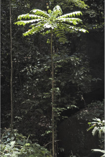
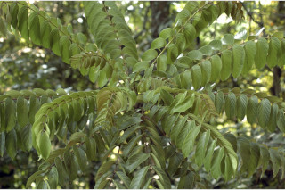
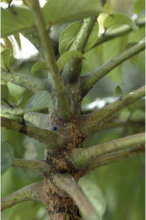
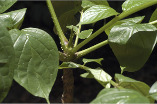
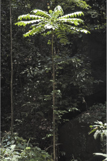
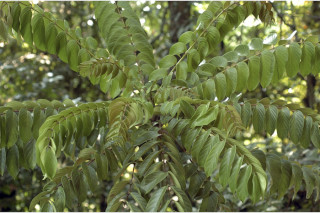
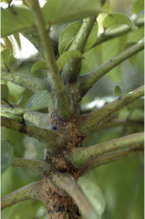
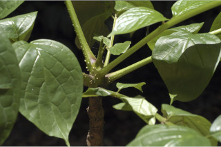

| Habit : | Tall deciduous trees , up to 30 m tall. |
| Leaves : | Leaves compound , imparipinnate , to 120 cm long; rachis triangular, glabrous ; leaflets opposite 9-14 pairs with terminal odd one; petiolule 0.6 cm long; lamina 8-24 x 3-10 cm, ovate , apex acuminate , base asymmetric , margin entire , chartaceous , shining above, glabrous ; midrib flat or slightly canaliculate above; secondary_nerves of one side of lamina is more acute then other; tertiary_nerves broadly reticulate . |
| Inflorescence / Flower : | Inflorescence panicle ; flowers purple outside and yellow within, petals wooly along margin. |
| Fruit and Seed : | Capsule , 30-50 x 6-8 cm, brown, 2 winged ; seeds many, flat, with membranous wing . |


 






